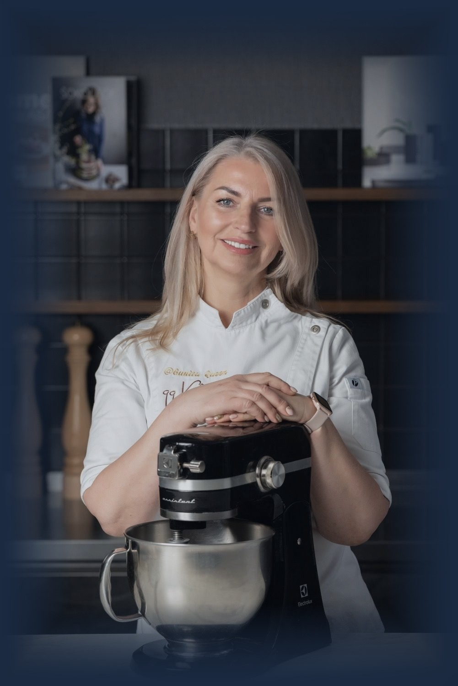

Konditore ar vairāk nekā 15 gadu pieredzi — un pārliecību, ka konditoreja nav talants, bet amats, ko var iemācīties.

Mans profesionālais ceļš konditorejā sākās pirms vairāk nekā 15 gadiem mazā konditorejā Nīderlandes pilsētiņā Leidenē, kur 6 mēnešus biju kā māceklis.
Gadu gaitā esmu mācījusies pie dažādiem franču konditoriem un apguvusi klasisko tehniku no pamatiem — mīklas, krēmus, šokolādi, temperatūras, tehnoloģijas un proporcijas. Bet svarīgākais, ko esmu sapratusi: recepte ir tikai sastāvdaļu pieraksts. Īstā meistarība sākas brīdī, kad saproti, kā un kāpēc tā strādā.
Tieši to es mācu — ne tikai atkārtot soļus, bet saprast procesu. Lai tu vari paskatīties uz jebkuru recepti un zināt, kas tajā notiks, pirms ieslēdz savu cepeškrāsni.
Katrā nodarbībā skaidroju, kāpēc katrs solis ir tieši tāds — temperatūras, proporcijas, procesi.
No pamatiem līdz sarežģītam — tempā, kurā vari izsekot un izmēģināt.
Bez sarežģītiem terminiem tur, kur tie nav vajadzīgi. Ja kaut kas neizdodas — raksti, es atbildēšu.
Ja gribi mācīties kopā ar mani — sāc ar meistarklasi klātienē vai online kursu savā tempā. Un ja vēl šaubies, sāc ar bezmaksas rīkiem — tos esmu izveidojusi, lai tava kūku un desertu gatavošana kļūtu vienkāršāka.